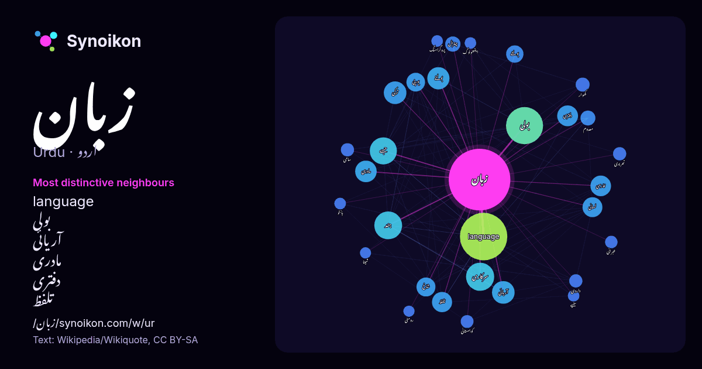

اردو · مقبول لفظ
زبان
“language” · ویکیپیڈیا, Wikiquote کے 1862 استعمالات میں اس کے آس پاس ملنے والے الفاظ۔

سب سے نمایاں پڑوسی
- language 158×
- بولی 70×
- آریائی 42×
- مادری 40×
- دفتری 39×
- تلفظ 34×
- بولنے 31×
- لسانی 29×
- ہند 28×
- بولتے 23×
- سرکاری 22×
- ترکی 22×
- معدوم 20×
- شاخ 20×
- چترال 19×
- داردی 18×
- سامی 17×
- کھوار 17×
- کوہستانی 17×
- یورپی 15×
× = عام ویکیپیڈیا متن کے مقابلے میں کتنے گنا زیادہ۔
سب سے زیادہ آنے والے پڑوسی
- میں 434
- سے 267
- جو 234
- language 232
- اس 175
- یا 167
- کا 164
- بولی 142
- کو 125
- والی 109
- بھی 97
- جانے 95
- اردو 86
- سرکاری 82
- ہند 80
- جسے 76
- جاتی 71
- جاتا 56
- آریائی 53
- ترکی 53
سیاق میں
- دروازے مجھ پر بند رہتے۔ زبان مادری زبان دوسری زبان سرکاری زبان دفتری زبان قومی زبان رابطہ کی زبان تحریری زبان اشاراتی زبان علامتی زبان لسانیات زبانوں کی فہرست Wikipedia snippets · زبان
- ترکی زبان ترک زبانوں میں سب زیادہ بولی جانے والی زبان ہے۔ دنیا بھر کے 6.5 سے 7.3 کروڑ افراد کی زبان جن کی اکثریت ترکیہ میں رہتی ہے تاہم قبرص، یونان اور Wikipedia snippets · ترکی زبان
- پولش زبان یا پولسکی زبان یا پولستانی زبان یا پولینڈی زبان (Polish language) (پولستانی زبان: język polski, polszczyzna) ایک سلافیہ زبان ہے جو بنیادی طور Wikipedia snippets · پولینڈی زبان
- براہوئی ایک قدیم ترین زبان ہے۔ ہر نئے سیکھنے والے کے لیے یہ زبان بہت مشکل ثابت ہوتی ہے۔ یہ زبان بہت وسیع علاقے میں بولی جاتی ہے۔ کوئٹہ سے لے کر ایران Wikipedia snippets · براہوی زبان
- مادری زبان (انگریزی:Native Language/Mother Language) یا زبانِ اول یا نسلی زبان، آبائی زبان یا پیدائشی زبان کسی انسان کی اس زبان کو کہا جاتا ہے جس کو وہ Wikipedia snippets · مادری زبان
- چیکی زبان (چیک زبان میں:Český jazyk) وسطی یورپ میں بولی جانے والی زبان ہے جسے چیک جمہوریہ کے علاوہ سلوواکیہ، آسٹریا، کرویئشا، بولندا، جرمنی، یوکرین، رومانیہ Wikipedia snippets · چیک زبان
- پرتگیزی زبان یا پرتگالی زبان ایک یورپی زبان ہے۔ دراصل یہ پرتگال کی قومی زبان ہے لیکن پرتگال کی کئی سابقہ مقبوضات میں بھی رائج ہے جن میں برازیل، موزمبیق، Wikipedia snippets · پرتگیزی زبان
- کشمیری زبان ( کشمیری: کٲشُر، دیوناگری: कॉशुर) بھارت اور پاکستان کی ایک اہم زبان ہے۔ متکلمین کی تعداد 15 لاکھ سے کچھ اوپر ہے۔ بمطابق 2011 مردم شماری، جموں Wikipedia snippets · کشمیری زبان
مزید الفاظ
2026-10-09 کو طے شدہ ترتیبات (±5 الفاظ، درمیانہ کارپس) کے ساتھ پہلے سے شمار کیا گیا۔ انٹرایکٹو نقشہ اسے لائیو ڈیٹا سے تازہ کر سکتا ہے۔
مشینی ترجمہ شدہ انٹرفیس؛ اصلاحات کا خیرمقدم ہے۔